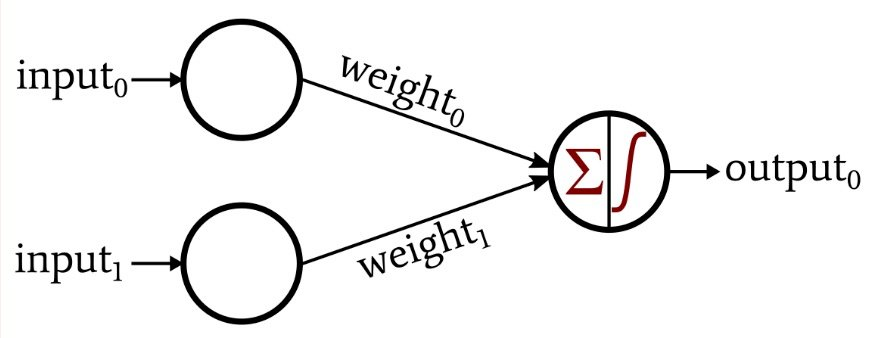
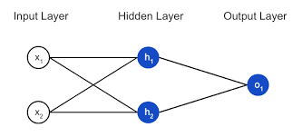

Artificial Intelligence
Artificial intelligence (AI), is intelligence demonstrated by machines,
unlike the natural intelligence displayed by humans and animals. Leading AI
textbooks define the field as the study of "intelligent agents": any device that perceives
its environment and takes actions that maximize its chance of successfully achieving its goals.
Artificial Neural Networks:
These are inspired from the human brain and hence by developing a similar analogy, we came up with the idea of
neural networks.
Analogy?
The human brain consist of neurons, they help in collecting the information and carrying them from one neuron to
another with the help of dendrites.
Neural Networks
- Neuron Networks usually consist of neurons which help in forming the building blocks of the neural network.
- In the simplest terms possible: A neuron takes inputs, does some math with them, and produces one output.

3 things are happening here:
- First, each input is multiplied by a weight:
x1 = x1 * w1
x2 = x2 * w2
What's a Weight?
- Weight is a parameter within a neural network that transforms input data within the network's hidden layers.
- In simpler terms: Weight is the strength of connection, if I increase the input then how much influence doesit have on the output.
- Next, all the weighted inputs are added together with a bias b:
(x1 * w1) + (x2 * w2) + b
What's Bias?
- Bias is how much this output wants to be activated regardless of the input.
In simpler terms:
- Since we do not have control over the amount which is multiplied that is the weights, we add something called bias, in order to reduce or increase the influence on the output.
- Finally, the sum is passed through an activation function:
y = f(x1 * w1 + x2 * w2 + b)
- The activation function is used to turn an unbounded input into an output that has a nice, predictable form. A commonly used activation function is the sigmoid function:
- Sigmoid function is similar to step function, in which value is only between 0 or 1.
- So, it causes a threshold at 0.5 and values above it will be classified as 1 and values below it will be classified as 0.

- The sigmoid function only outputs numbers in the range (0,1). You can think of it as compressing (-infinity, +infinity) to (0,1) -- big negative numbers become ~o, and big positive numbers become ~1.
- The final step in building a neural network is to combine the neurons into a Neural Network.
In Summary:
- A neural network is nothing more than a bunch of neurons collected together.
- Here's what a simple neural network might look like:

- The network has 2 inputs, a hidden layer with 2 neurons (h1 and h2), and an output layer with 1 neuron (o1).
- Notice that the inputs for o1 are the outputs from h1 and h2 - that's what makes this a network.
For simplicity:
- A hidden layer is any layer between the input (first) layer and output(last) layer. There can be multiple hidden layers.